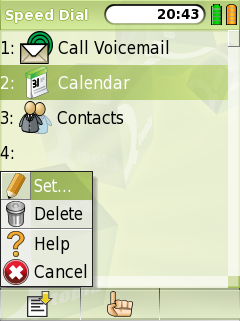

|
Home · All Namespaces · All Classes · Grouped Classes · Modules · Functions | |
The QSpeedDialList class provides a list widget for editing Speed Dial entries. More...
#include <QSpeedDialList>
Inherits QSmoothList.
The QSpeedDialList class provides a list widget for editing Speed Dial entries.
If you need a dialog that allows the user to select a spot to insert an already selected action (for example, adding a QContact's phone number to Speed Dial list), use QSpeedDial::addWithDialog().
Use editItem() to edit selected entry. This will open QtopiaServiceSelector which provides a list of predefined services.
Use clearItem() to remove the entry.

See also QSpeedDial and QtopiaServiceSelector.
This property holds the number of rows in the list.
Access functions:
This property holds the input required for the currently selected Speed Dial entry if exists; otherwise returns an empty string.
Access functions:
This property holds the currently selected row number.
Access functions:
Constructs a QSpeedDialList object with the given parent.
Destroys this QSpeedDialList
Adds a service to the Speed Dial
Presents the a QtopiaServiceSelector for the user to select a service performed, and also asks for an input to associate with it.
See also QtopiaServiceSelector.
Removes the Speed Dial entry at the given row. The action is not removed from Favorite Services.
This is an overloaded member function, provided for convenience.
Removes the Speed Dial entry at the currently selected row. The action is not removed from Favorite Services.
This signal is emitted whenever the user selects a different row (either with the keypad or the mouse).
Edits the Speed Dial entry at row.
Presents the a QtopiaServiceSelector for the user to select a service performed for the same input.
See also QtopiaServiceSelector.
This is an overloaded member function, provided for convenience.
Edits the Speed Dial entry at the currently selected row.
Forces the entry for Speed Dial at input to be refreshed from the source.
This signal is emitted whenever the user either clicks on a different row with the mouse, or presses the keypad Select key while a row is selected.
Returns the input required to trigger the Speed Dial entry at row.
Selects the row from the list that corresponds to the Speed Dial input. If there is no such row then it will go the the one before where it would be.
See also currentInput().
| Copyright © 2009 Trolltech | Trademarks | Qt Extended 4.4.3 |